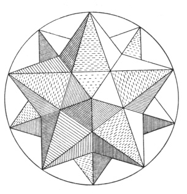

Table Of Contents
Introduction
About
Setup
Usage
Examples
Reference
Related Topics
Documentation overview
Quick search
Index
C
|
D
|
F
|
G
|
K
|
M
|
N
|
S
|
V
C
Cover (class in kmapper.cover)
D
data_from_cluster_id() (kmapper.kmapper.KeplerMapper method)
define_bins() (kmapper.cover.Cover method)
F
find_entries() (kmapper.cover.Cover method)
fit_transform() (kmapper.kmapper.KeplerMapper method)
G
GraphNerve (class in kmapper.nerve)
K
KeplerMapper (class in kmapper.kmapper)
kmapper (module)
kmapper.cover (module)
kmapper.kmapper (module)
kmapper.nerve (module)
M
map() (kmapper.kmapper.KeplerMapper method)
N
Nerve (class in kmapper.nerve)
S
SimplicialNerve (class in kmapper.nerve)
V
visualize() (kmapper.kmapper.KeplerMapper method)